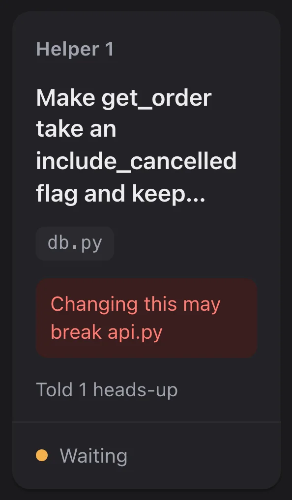
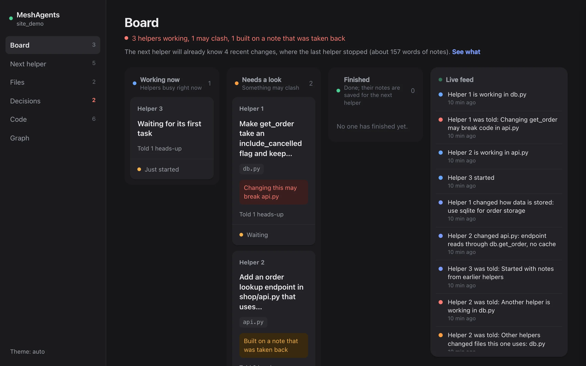
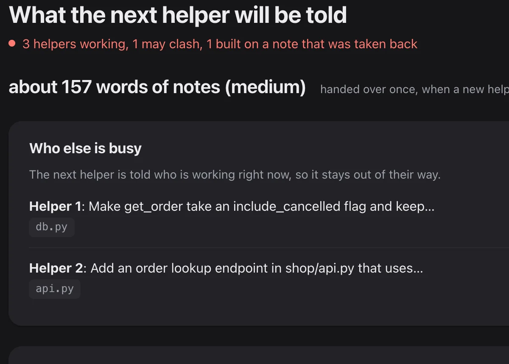
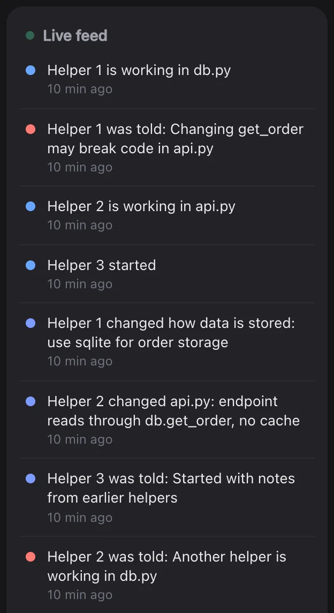
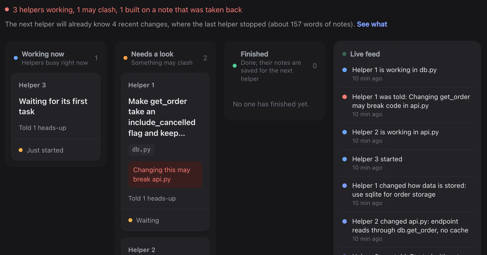

Warns before a clash
The second agent hears it first.
[] Possible collision on shop/db.py: another agent is working in it now.
Callers elsewhere that may now break:
- shop/api.py

One shared memory, so your coding agents stay in sync.

The second agent hears it first.
[] Possible collision on shop/db.py: another agent is working in it now.
Callers elsewhere that may now break:
- shop/api.py

Every change is noted, with its reason.

It starts with your rules and notes.

See every agent at a glance.

of runs finish clean
was 53%the next agent already knows the job
was 45%cost for every good result
list-price estimateMeasured in 330 test runs on tasks built to make agents collide. Full results
Based on our test results, assuming one in five sessions has agents working on the same files (real projects may see fewer). It is an estimate, not a promise.
No. Start Claude Code with the plugin and carry on; it runs by itself.
The second one is told what the first one changed, before it edits.
It starts with a short note: your rules and what changed. You can see it on the board.
No. About a tenth of a second per step, and it steps aside if anything fails.
Nowhere. Notes live in a FalkorDB graph on your own machine.